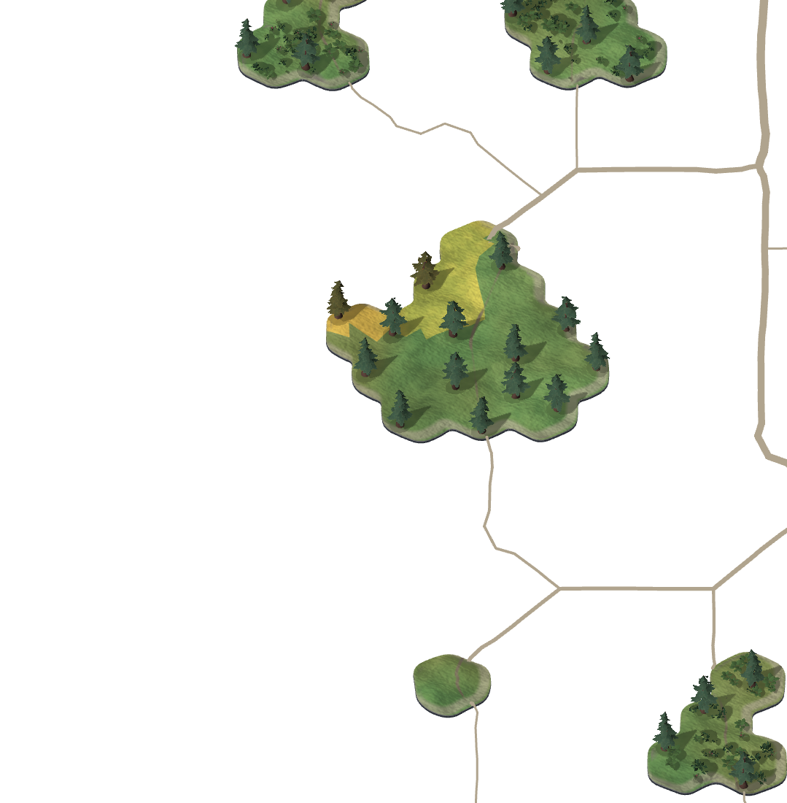
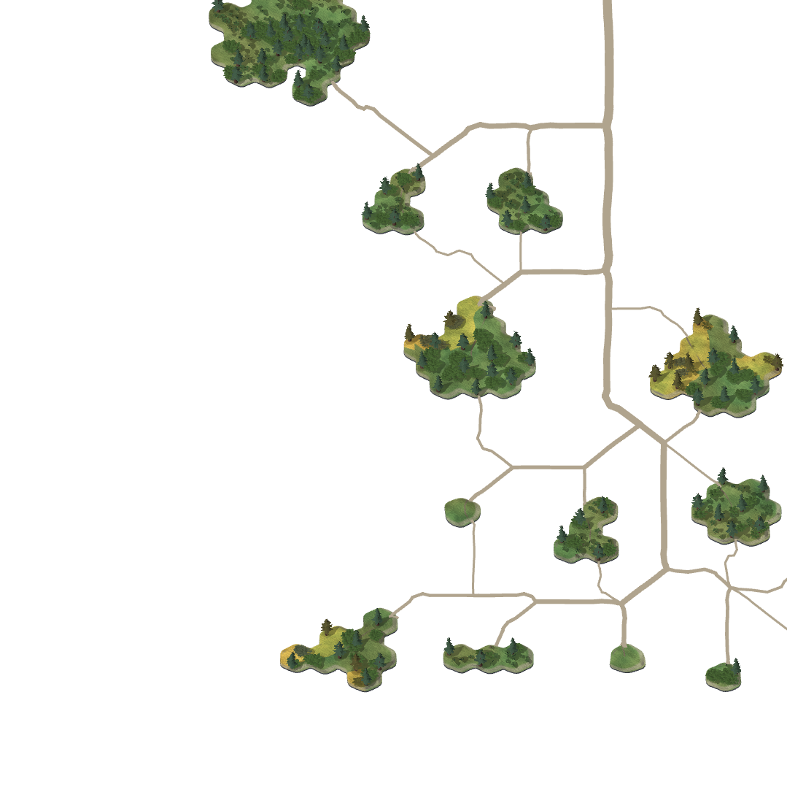
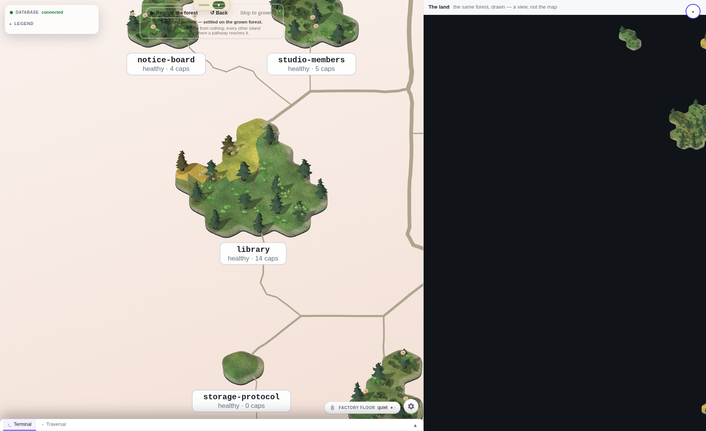
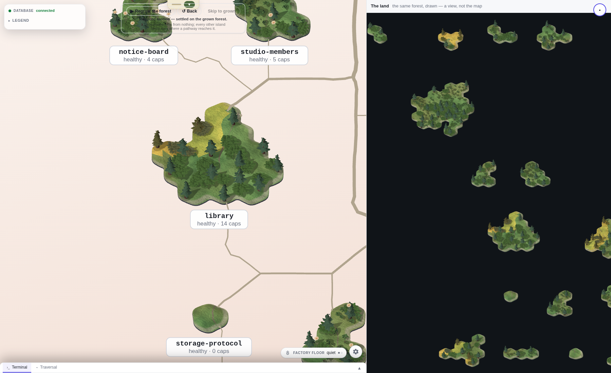

Before 1b3859a2 → after 40963443, 24 September 2026. One fresh real-corpus snapshot, Chromium 148.0.7778.96. The native plants now appear densely around the trees. Their placements retain identity and the shipped relief height. Collision/shoreline refinement and the remaining interaction/public-delivery pieces are separate work; this is not appearance approval or retirement.
Measurements and limits. The initial suspicion that native roads disappeared was refuted by exact pixel comparison: all17,464 road-mask pixels are unchanged.
Same actual XY projection; camera distance and depth planes change and are retained in the receipt.

Same actual XY projection; camera distance and depth planes change and are retained in the receipt.

LEFT: mounted view with matched XY projection. RIGHT: independent standalone view, which recentres after the anchor repair; unmatched framing, not a controlled pair.


Only SVG coverage was temporarily hidden, then restored. Native raw pixels and actual camera stayed exact. This is harness diagnosis, not product styling or retirement.
